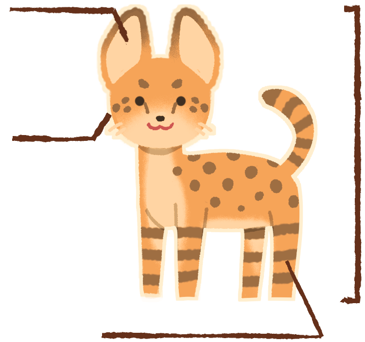
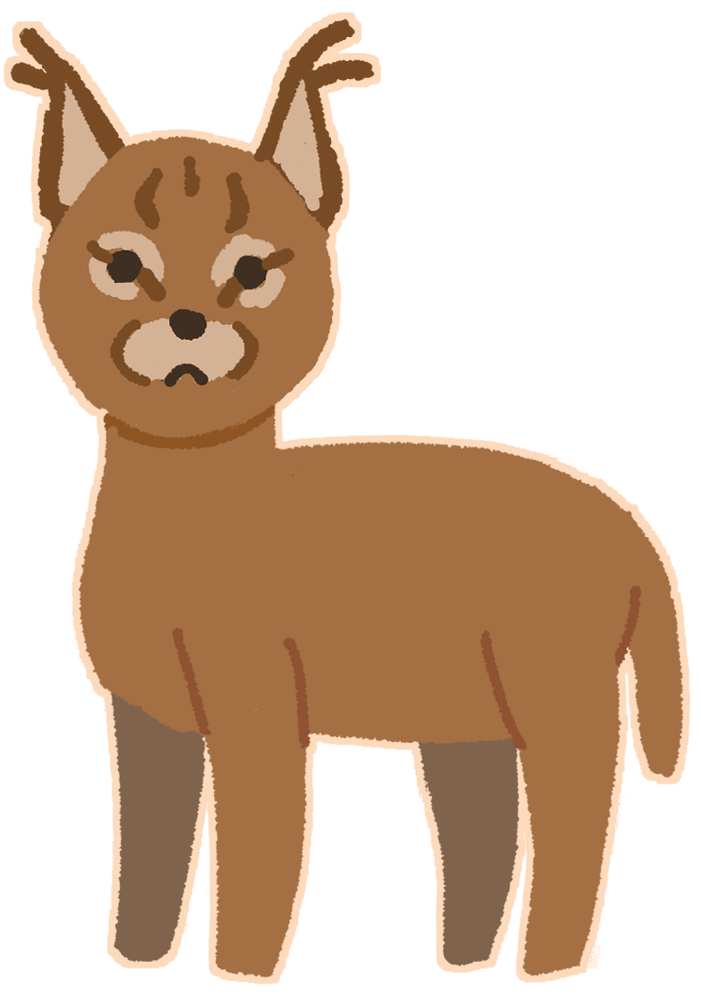
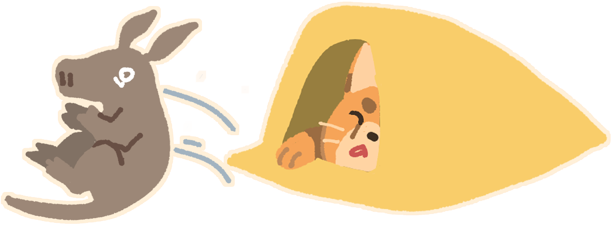
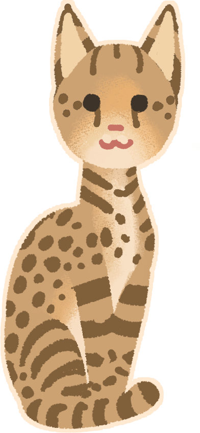

Самые пропорционально большие уши среди кошачьих

Сервал —
стройная кошка средних размеров.
Длина тела 90—135см
Высота в плечах до 40—65 см
Взрослые сервалы весят от 8 до 18 кг.
Самые длинные ноги среди кошачьих
Миниатюрная голова
По ряду морфологических особенностей сервал наиболее близок к рысям и каракалам, хотя окраской — тёмные пятна и полосы на желтовато-сером фоне — больше всего напоминает гепарда. Грудь, живот и морда у него белые. Уши с наружной стороны чёрные с жёлтыми или белыми поперечными пятнами.

Живут и рожают детенышей сервалы обычно либо в густой растительности, либо в брошенных норах трубкозубов и дикобразов.

Сервалов иногда держат в качестве
домашних питомцев, хотя из-за
их дикого нрава в некоторых странах
владение сервалами регулируется. Им так же необходима особая диета из сырого мяса.
Сервалов
скрещивают с домашними кошками, чтобы вывести породу
саванна.
